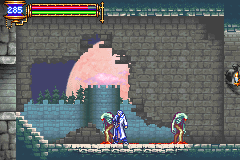
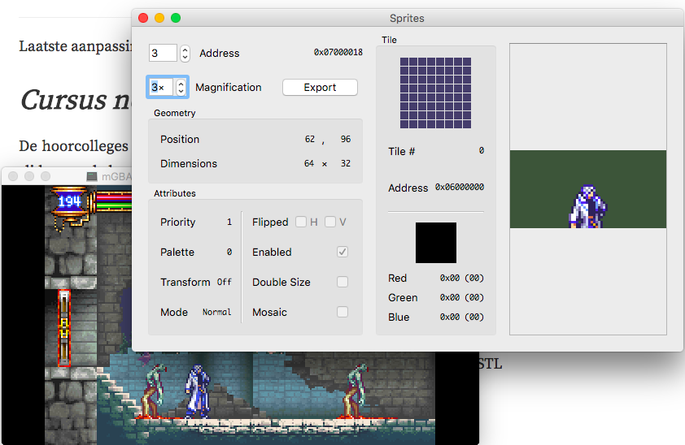
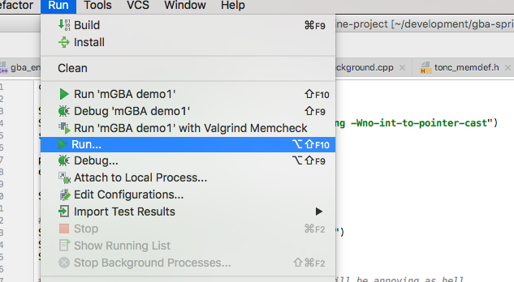
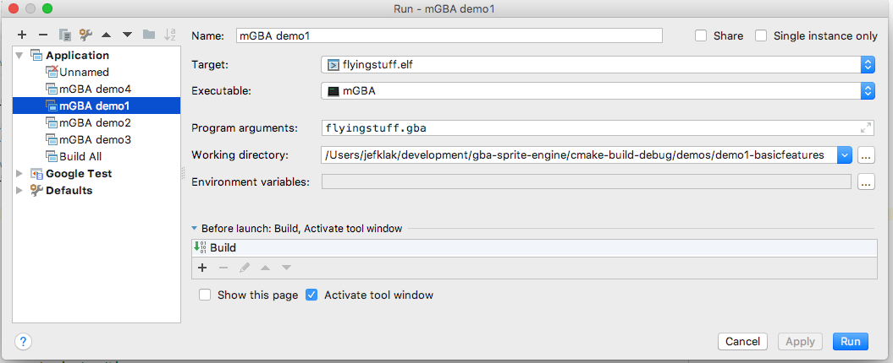

Het zal je ondertussen wel al duidelijk zijn dat technische details zoals IO pointers en OAM vanuit labo 4 de code er niet bepaald duidelijker op maken. Jammer genoeg voorziet de GBA geen andere mogelijkheden. Een oplossing zal van de ontwikkelaar zelf moeten komen, in de vorm van de principes uit labo 7.
Als ontwikkelaar wil ik niet altijd bezig zijn met de juiste hexadecimale waarde voor IO pointer aan te spreken om een sprite te renderen. Dit zou éénmalig voorzien moeten worden, en dan herbruikbaar moeten zijn. Herbruikbaarheid betekent:
function, structclass bovenop bovenstaande.De oplossing van labo 4 voorziet methodes als create_sprite die zowel voor de bal, de paddle als de blokken aangeroepen kunnen worden. Omdat de OAM structuur té low-level is, voorzien we een abstractielaag: de functie geeft een sprite* struct terug die we zelf ontworpen hebben:
typedef struct sprite {
int x; // position
int y;
int dx; // velocity
int dy;
uint8 w; // dimensions (bvb simple hitbox detection)
uint8 h;
volatile oam_object *obj;
} sprite;
De sprite struct heeft een reference naar oam_object* vast. Dit noemt men “wrapping": de code kan niet rechstreeks aan het object maar moet met de sprite werken. In C zijn er geen mogelijkheden om dit te encapsuleren met een access modifier zoals C++' private.
Vergeet niet dat deze eigenschappen redundant zijn en geheugen innemen voor niets… In de OAM struct zitten eigenlijk in bepaalde bits diezelfde eigenschappen (x, y, w, h). De afweging tussen gebruiksgemak en geheugengebruik is in dit geval echter eenvoudig gemaakt. sprite.x is een pak eenvoudiger in gebruik dan sprite.obj->attr1 | OAM_X_MASK!
De waardes in de sprite manipuleren levert echter een synchronisatie probleem op: de GBA reageert enkel op het OAM geheugen dus we moeten beide waardes in sync houden:
void position(sprite *s) {
volatile object *obj = s->obj;
int x = s->x;
int y = s->y;
obj->attr0 = (obj->attr0 & ~OAM_Y_MASK) | (y & OAM_Y_MASK);
obj->attr1 = (obj->attr1 & ~OAM_X_MASK) | (x & OAM_X_MASK);
}
De devKit toolchain voorziet ook een C++ cross-compiler: arm-none-eabi-gcc wordt simpelweg arm-none-eabi-g++. That’s it! Je kan C++11 gebruiken en naar hartelust STL bibliotheken in de code verwerken in plaats van met char* “collecties” te moeten werken.
Echter… Er is geen enkel productiespel ooit uitgebracht op een cartridge dat in C++ geschreven is. Dit om de eenvoudige reden dat C++ een hoop overhead met zich meebrengt:
.gba ROM is véél groter in C++ door extra librariesclass t.o.v. een struct zou +/- 4 bytes extra zijnGezien de erg beperkte hardwaremogelijkheden van de GBA is het voor veel grote spellen praktisch gezien niet haalbaar om alles in C++ te schrijven. Trouwens ook niet in C: veel kritieke instructies in engines zijn nog in Assembly geschreven.
ls -la output:
-rwxr-xr-x 1 wgroenev staff 8320 Jul 25 13:54 main_c.gba -rwxr-xr-x 1 wgroenev staff 23328 Jul 22 20:36 main_cpp.gba -rwxr-xr-x 1 wgroenev staff 24032 Jul 25 13:55 main_cpp_stl.gba
De C++ ROM is 280% groter dan de C ROM, als je <vector> e.d. mee include zelfs 288% - van 8K naar 23K!
Voor Software ontwerp in C/C++ ligt de focus op software ontwerp, niet op performante algoritmes of hardware. Wij gaan dit “probleem” dus straal negeren en vanaf nu alles in C++ schrijven. Emulators hebben hier geen probleem mee, evenals de EZ-FLASH Omega ROM die ik gebruik om op echte hardware te draaien.
Welke concepten hebben we nodig om een minimaal spel te ontwerpen dat met 2D sprites werkt (MODE1)? Neem de Arkanoid clone opnieuw als voorbeeld. Ook technische vereisten zoals deze kunnen in een analyse gegoten worden om de ontwerpfase van het ontwikkelen te vergemakkelijken:
GBA001. Een minimale 2D sprite engine Beschrijving: Als programmeur wil ik niet bezig zijn met technische details van de GBA interface bij het ontwikkelen van een spel. Ik wil eenvoudig sprites op het beeld kunnen toveren en deze kunnen manipuleren. Context: Het moet mogelijk zijn om het gebruik van OAM en VRAM te vergemakkelijken. Acceptatiecriteria: - Ik wil als ontwikkelaar bij het boostrappen van het spel "sprite mode" kunnen kiezen. - Ik wil makkelijk sprites kunnen toevoegen aan de hand van een externe image in jpg/png formaat zonder iets van het palet af te weten. - Ik wil sprites kunnen verplaatsen op het scherm - Ik wil eenvoudig kunnen zien of sprite 1 "botst" met sprite 2.
Dit vraagt niet om een volledige herwerking van de opgave uit labo 4, maar om een abstractielaag in de vorm van klassen. Welke concepten kunnen we afleiden uit de analyse, of welke ontbreken er nog?
Bovenstaand model kan afwijken van wat jij in gedachten had: hier is geen enkelvoudig antwoord op te geven, de enige vereiste is een laag tussen het gebruik van OAM, VRAM en de programmeur die als designer optreedt.
Denk bij het ontwerpen van een klasse na over eventuele logische operatoren die van pas kunnen komen. Het is niet de bedoeling om een hoop overrides te implementeren om te laten zien hoe goed je daar in bent: code wordt “just-in-time” geschreven: YAGNI. Templates en abstracte klassen zijn ook niet altijd nodig.
Ga uit van het eenvoudigst mogelijke. Welke minimale elementen heb je absoluut nodig om de vereiste analyse tot een goed einde te brengen? Laat alle toeters en bellen achterwege en concentreer je op herbruikbaarheid en Clean Code.
Het OAM is gekoppeld aan een referentie naar het palet samen met een referentie naar het VRAM waar je je image data in de vorm van een “tileset” hebt opgeslagen. Voor de paddle voorzagen wij met een simpele for lus onze eigen tile data:
for(int i = 0; i < 4 * sizeof(tile_4bpp) / 2; i++) {
paddle_tile[i] = 0x2222;
}
In de praktijk wordt art aangeleverd door 2D artiesten die gespecialiseerd zijn in pixel art. Deze files moeten we vertalen naar hexadecimale waarden gegroepeerd in tileset en palet data.
Gegeven de volgende “pixel art”:
Herinner je dat OAM data vaste groottes hebben: we kiezen hier voor 64x32. Hoe verwerken we deze png in de ROM? Emulator screenshot:
Daar hebben we png2gba voor nodig, die de image omzet naar hexadecimale data. De broncode van bovenstaande screenshot verduidelijkt dit. Op de github pagina staan instructies om het tooltje te compileren.
png2gba -p -t img.png#include <kul.h>memcpyvoid copy_image_data() {
memcpy(pal_fg_mem, kul_palette, sizeof(kul_palette));
memcpy(&tile_mem[0][0], kul_data, sizeof(kul_data));
}
OAM attributes maken het eenvoudig om de image horizontaal of verticaal te flippen, bijvoorbeeld bij sprite animaties die naar links of naar rechts lopen. Transformatiematriches zijn nodig om te roteren.
Export tool Grit (Voor Windows gebruikers: Wingrit) geeft meer mogelijkheden, om bijvoorbeeld stukken van een palet te exporteren met ./grit piskel.png -p -gt -gB4 -ftc -pe 16 - zie handleiding. Maak op piskelapp.com je eigen pixel art.
Emulators zoals mGBA zijn krachtige tools voor de beginnende GBA ontwikkelaar om te graven in hun favoriete ROM. Ze bieden de mogelijkheid om tiles, palettes, sprites, geheugenwaardes, … allemaal in te kijken. Een van mijn favoriete games is Castlevania: Aria of Sorrow. Ik kan met mGBA zien hoe de sprites zijn opgedeeld in het scherm.
Probeer aan de hand van deze animatie maar eens te bepalen welke sprites gebrukt worden, en welke achtergronden:

Herinner je uit labo 4 dat er 4 VRAM pointers naar achtergrond geheugen is: 4 char blocks. Bovenstaand spel creëert zo de illusie van diepte: verschillende achtergronden schuiven over elkaar met verschillende snelheden (kijk goed naar de maan).
Uiteindelijk stelt zo’n 2D platformspel niet zo veel voor op gebied van sprite engine. Er kunnen immers maar maximum 128 objecten tegelijkertijd in het geheugen opgeslagen worden. In Aria of Sorrow wordt dat opgelost met “tussenschermen”: van area 1 naar 2 moet je door een soort van sluis. In de achtergrond wordt een hoop nieuwe data in alle IO adressen gepompt.
Het meeste werk ligt bij de artist. De screenshot linksboven toont de aanwezigheid van 2 personage sprites (Alucard en Soma) en 3 nummer sprites (Healthbar: 3, 2, 0). Toch klopt dit niet helemaal als je graaft in de mGBA sprite explorer:

Soma bestaat uit 2x 64x32 OAM objecten!
Er zal dus ook een soort van OAM manager nodig zijn die beide sprites aan elkaar rijgt, zodat in de code en in het spel dit één sprite lijkt te zijn. Dit zijn nog artefacten van de originele Gameboy.
gcc compiler met behulp van de Makefile uit labo 3.KeyManager die inlezen van toetsen abstraheert. Werken met functie pointers als callback methodes is niet nodig.Voor oefening 1 is er een alternatief met CLion en CMake: Verterk vanuit deze template: labo8-gbagplusplus.zip.
In CLion kan je rechtstreeks de emulator uitvoeren door de .gba file als argument mee te geven. Dat doe je via menu “Run as…” (met drie puntjes) onder “Run”:

Als je Edit Run Configurations selecteert, verschijnt het volgende venster:

Daar stel je de volgende waardes in:
mgba (of .exe voor Windows machines), volledig pad naar de binarycmake-build-debug/... subfolder waar de .gba file staat.elf.gba fileHier kan je ook nieuwe configs toevoegen met het + symbool linksboven.
SpriteManager klasse moeten teruggeven bij het aanmaken van een “sprite” (niet een GBA sprite, maar de term die wij handhaven)?